From a static page to an interactive app
.qmd file that becomes a dashboardserver: shinyAll examples use the Titanic data and come from the project templates. Every code example is followed by a screenshot of the dashboard it makes.
A Quarto dashboard can be either. One line in the YAML decides.
| Static | Interactive | |
|---|---|---|
| YAML | format: dashboard |
format: dashboard server: shiny |
| Output | one HTML file | a Shiny app |
| Button in RStudio | Render | Run Document |
| Readers can | hover, zoom, search tables | change inputs and re-run R code |
| Publish on | GitHub Pages | Posit Connect Cloud |
Tip
Start static. Add server: shiny only when a reader’s choice must re-run R code, for example filtering the data with a slider.
---
title: "My First Dashboard"
format: dashboard
---
```{r}
#| include: false
library(tidyverse)
url <- paste0("https://bryantstats.github.io/math421/",
"data/titanic_final.csv")
df <- read_csv(url) |>
mutate(Survived = factor(Survived,
labels = c("No", "Yes")),
Pclass = factor(Pclass))
```
## Row
```{r}
#| title: Survival by class
ggplot(df, aes(x = Pclass, fill = Survived)) +
geom_bar()
```
```{r}
#| title: Age
ggplot(df, aes(x = Age)) +
geom_histogram()
```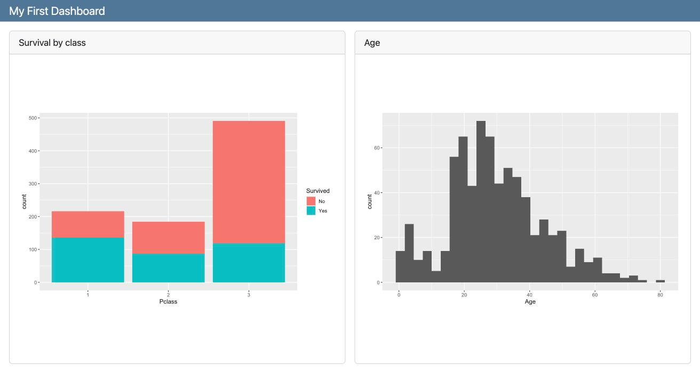
format: dashboard turns the document into a dashboard.#| title: gives the card a title.#| include: false runs the setup chunk without making a card.## Row sit side by side.The number of # decides what a heading does.
| Heading | Makes |
|---|---|
# Overview |
a page: a tab in the navigation bar |
## Row |
a row of cards, side by side |
## Column |
a column of cards, stacked |
### Column inside a ## Row |
a column nested in that row (and the other way around) |
Size them with attributes: ## Row {height=30%}, ### Column {width=60%}.
By default the top level is rows. Add orientation: columns under dashboard: in the YAML to start with columns.
---
title: "Layout"
format: dashboard
---
# Overview
## Row {height=30%}
::: {.card title="Card A"}
Row 1, first card
:::
::: {.card title="Card B"}
Row 1, second card
:::
## Row {height=70%}
### Column {width=60%}
::: {.card title="Card C"}
Row 2, left column (60% wide)
:::
### Column {width=40%}
::: {.card title="Card D"}
Row 2, right column, top
:::
::: {.card title="Card E"}
Row 2, right column, bottom
:::
# Details
::: {.card title="Card F"}
A second page
:::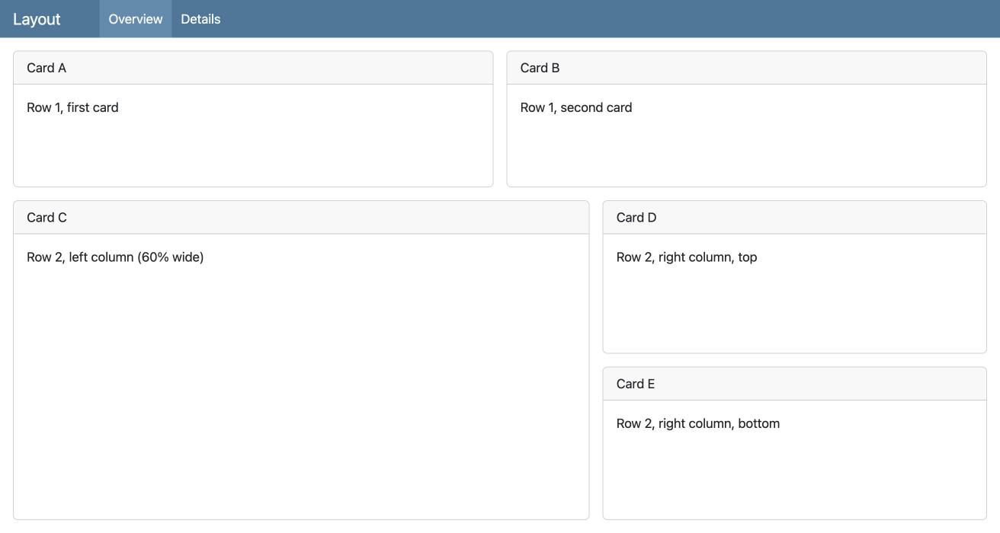
# Overview and # Details are the two tabs in the navigation bar.::: {.card title="..."} makes a card from plain text, with no code.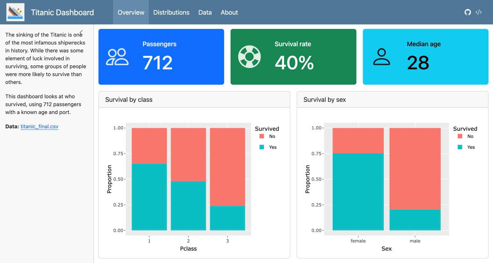
Put a sidebar on a page with ## {.sidebar}. Text and inputs go inside it.
Warning
On a page with a sidebar, the sections after it are laid out as columns, even if they are called ## Row. To stack a row of value boxes above a row of plots, put both rows inside one ## Column, as above.
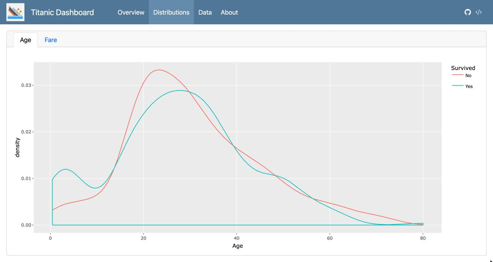
Add {.tabset} to a row or column. Each card in it becomes a tab, and the card titles (Age, Fare) become the tab names.
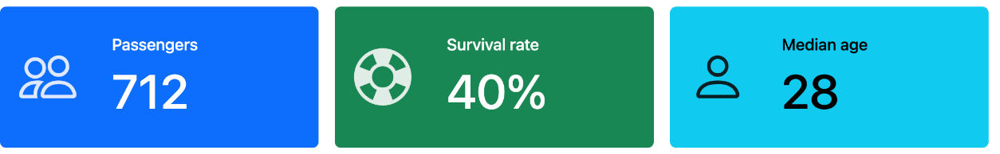
#| content: valuebox turns a chunk into a big-number box. The chunk returns a list() with value, icon, and color."primary", "success", "info", "warning", "danger", or a hex code.These work in a static dashboard. No server is needed.
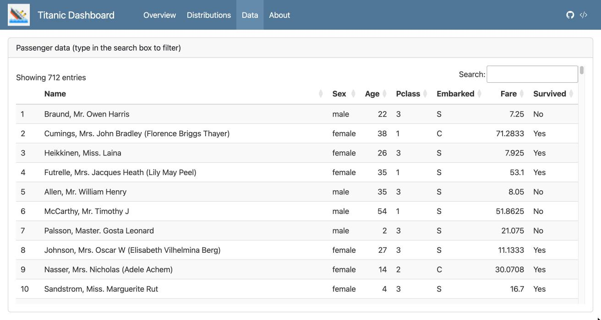
datatable() adds the search box, sortable columns, and pages. The ggplotly() plots are on the static example.
# About
::: {.card title="About this dashboard"}
{width=60}
This dashboard was built with Quarto. The **Overview** page shows the main numbers,
**Distributions** compares age and fare for passengers who did and did not survive,
and **Data** lets you search the passenger list.
Women and first-class passengers survived at much higher rates than men and
third-class passengers.
:::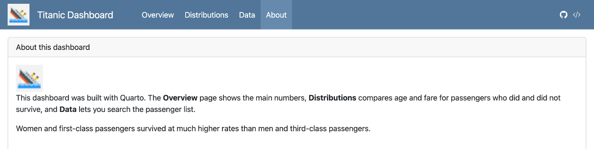
.card is plain Markdown: bold, lists, links.`r nrow(df)` passengers.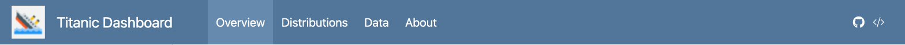
logo: shows an image next to the title (left). Keep the image in the same folder.nav-buttons: adds icons at the top right.
icon: linkedin or icon: github with your profile link.icon: code-slash with the Raw link of your .qmd on GitHub.Sidebar, value boxes, plotly plots, and four pages. Dashboard · Code
---
title: "Titanic - selectInput"
format: dashboard
server: shiny
---
```{r}
#| context: setup
library(shiny)
library(tidyverse)
library(plotly)
library(DT)
url <- paste0("https://bryantstats.github.io/math421/",
"data/titanic_final.csv")
df <- read_csv(url)
```
# Plots
## {.sidebar}
```{r}
selectInput("var", "Choose a variable",
choices = c("Sex", "Pclass", "Embarked"))
```server: shiny runs the dashboard with Shiny.#| context: setup loads packages and data once.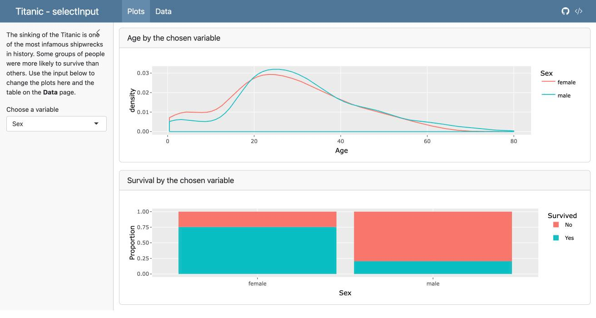
The full template, 1_select. The Choose a variable box in the sidebar is the selectInput().
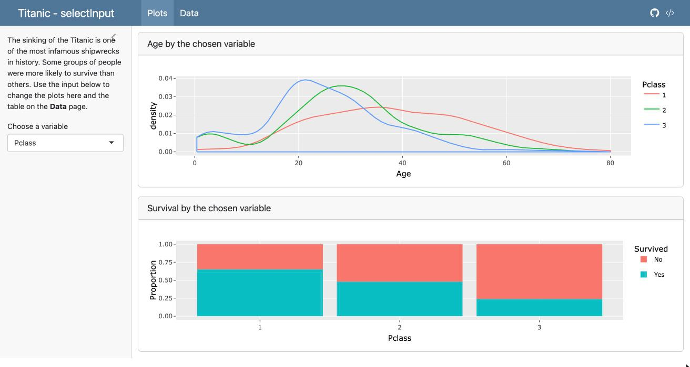
After choosing Pclass, both plots redraw by class.
plotlyOutput(), DTOutput(), plotOutput(), textOutput().#| context: server chunk fills them: renderPlotly(), renderDT(), renderPlot(), renderText().plotlyOutput("p2") ↔︎ output$p2. input$var is the current value of selectInput("var", ...).| Input | Gives input$id as |
Template |
|---|---|---|
selectInput("var", ...) |
one value | 1_select |
checkboxGroupInput("port", ...) |
several values | 2_checkbox |
sliderInput("age", ..., value = c(0, 80)) |
a range: input$age[1], input$age[2] |
3_slider |
radioButtons("pos", ...) |
one value | 4_radio |
dateRangeInput("dates", ...) |
two dates | 5_date_range |
All five together: 6_combine
selectInput("var", "Group by",
choices = c("Sex", "Pclass", "Embarked"))
checkboxGroupInput("port", "Port of embarkation",
choices = c("Cherbourg" = "C",
"Queenstown" = "Q",
"Southampton" = "S"),
selected = c("C", "Q", "S"))
sliderInput("age", "Age", min = 0, max = 80, value = c(0, 80))
radioButtons("pos", "Bar type",
choices = c("Proportion" = "fill", "Count" = "stack"))
dateRangeInput("dates", "Date range",
start = min(df$date), end = max(df$date),
min = min(df$date), max = max(df$date))input$var, input$port, …"Cherbourg" = "C": show Cherbourg, send "C" to input$port.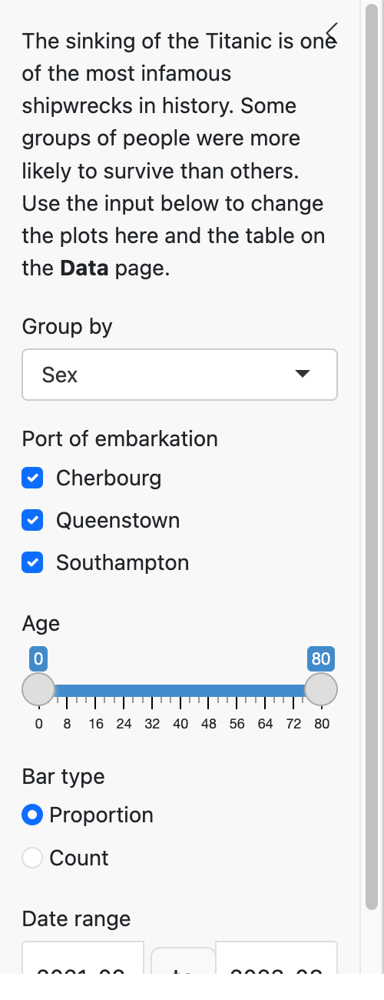
reactive()#| context: server
filtered <- reactive({
df |>
filter(Embarked %in% input$port,
Age >= input$age[1], Age <= input$age[2],
date >= input$dates[1], date <= input$dates[2])
})
output$p1 <- renderPlotly({
if (nrow(filtered()) == 0) return(empty_plot())
p <- ggplot(filtered(), aes(x = Age, color = .data[[input$var]])) + geom_density()
ggplotly(p)
})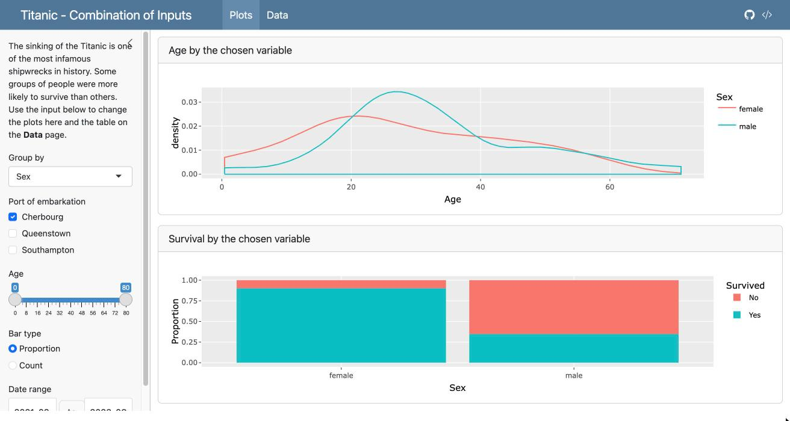
Only Cherbourg ticked: every plot uses the filtered data.
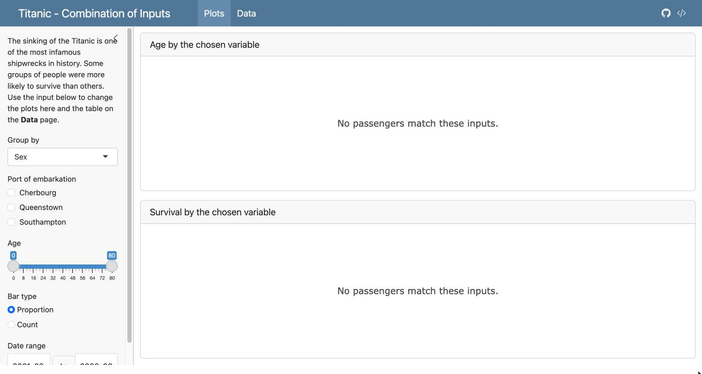
No port ticked: 0 rows, so empty_plot() shows a message.
reactive() filters once; every output reuses it. Call it with filtered().empty_plot() is defined in the setup chunk of the templates: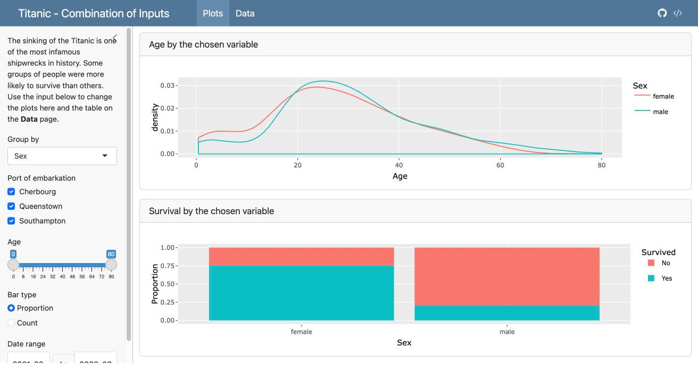
Five input types on the Plots page; the Data page table follows the same inputs. Dashboard · Code
Static dashboard (no server: shiny)
.html file plus a _files folder..html on your GitHub page, like your other assignments.Interactive dashboard (server: shiny)
.qmd, your data file, and your logo.Important
A free Connect Cloud account holds only a few apps. Create two accounts, connect both in RStudio (Tools → Global Options → Publishing), and pick one under Publish from account each time. Delete dashboards you no longer need: publishing to a full account fails and can break the apps already on it.
| What you see | Usual cause |
|---|---|
| Cards in the wrong place | Wrong number of #; or a sidebar page where rows became columns |
| A plot stays the same after changing an input | Output id typo: plotlyOutput("p1") vs output$p01 |
object 'filtered' not found |
Called filtered without () |
could not find function "selectInput" |
library(shiny) missing from the setup chunk |
| Render button runs but inputs do nothing | Interactive dashboards need Run Document |
| Works on your computer, fails after publishing | Data file not ticked in the Publish dialog, or a path like C://Users/... |
maximum applications limit |
Account full: delete old apps or use your second account |
nav-buttons to your own GitHub profile and source code link."Survived" to the choices. What happens to the bar chart, and why?Fare and use it in filtered().Then start the Dashboard Project.